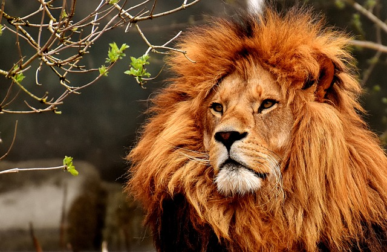
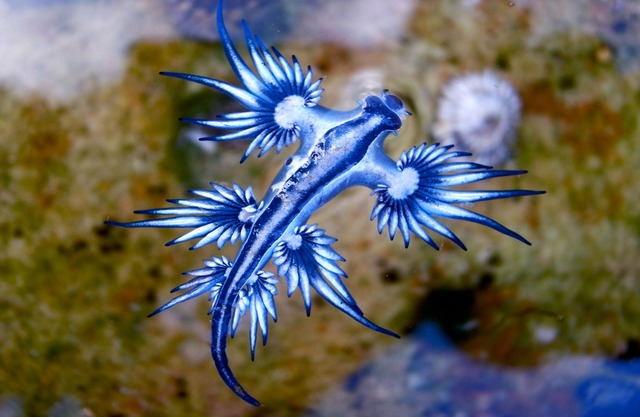

Animals
Elephant

Elephants are the largest existing land animals. Three living species are currently recognised: the African bush elephant, the African forest elephant, and the Asian elephant. They are the only surviving members of the family Elephantidae and the order Proboscidea. The order was formerly much more diverse during the Pleistocene, but most species became extinct during the Late Pleistocene epoch.
Parrot

Parrots, also known as psittacines, are birds of the roughly 398 species in 92 genera comprising the order Psittaciformes, found mostly in tropical and subtropical regions. The order is subdivided into three superfamilies: the Psittacoidea ("true" parrots), the Cacatuoidea (cockatoos), and the Strigopoidea (New Zealand parrots). One-third of all parrot species are threatened by extinction, with higher aggregate extinction risk (IUCN Red List Index) than any other comparable bird group.
Lion
The lion (Panthera leo) is a large cat of the genus Panthera native to Africa and India. It has a muscular, broad-chested body; short, rounded head; round ears; and a hairy tuft at the end of its tail. It is sexually dimorphic; adult male lions are larger than females and have a prominent mane. It is a social species, forming groups called prides. A lion's pride consists of a few adult males, related females, and cubs. Groups of female lions usually hunt together, preying mostly on large ungulates.
Blue Dragon (Glaucus atlanticus)
Glaucus atlanticus (common names include the blue sea dragon, sea swallow, blue angel, blue glaucus, dragon slug, blue dragon, blue sea slug, and blue ocean slug) is a species of small, blue sea slug, a pelagic (open-ocean) aeolid nudibranch, a shell-less gastropod mollusk in the family Glaucidae.